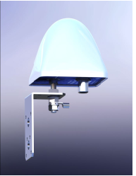
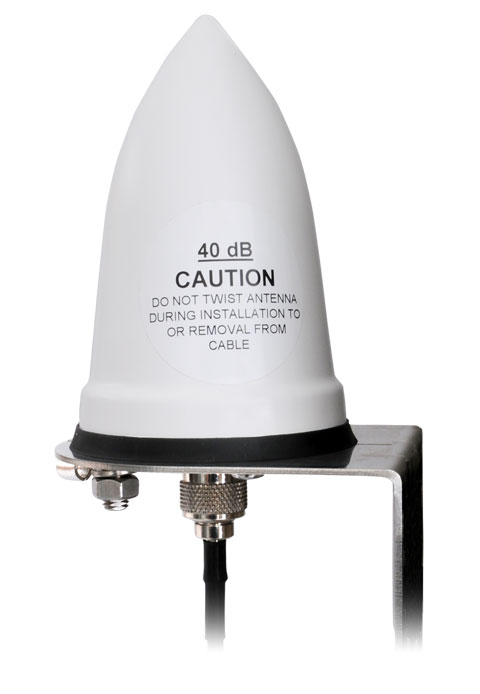
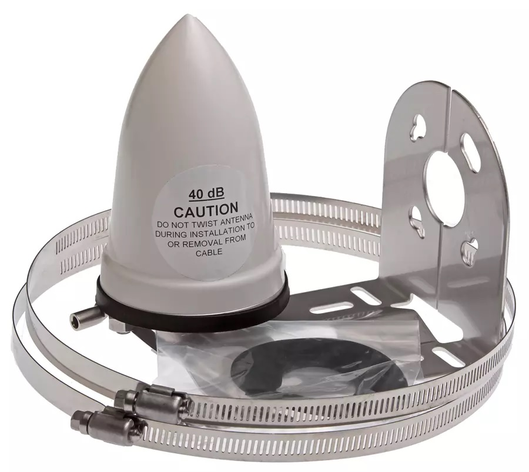
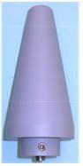
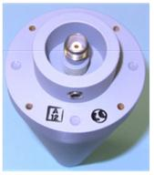
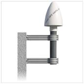
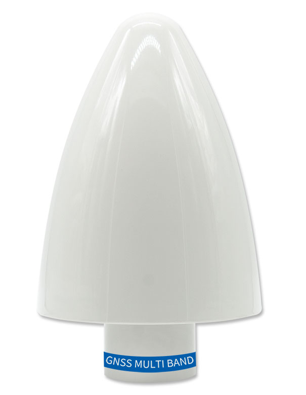
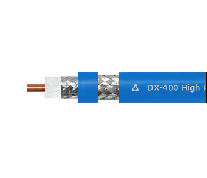
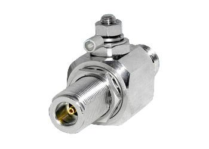

Editregion
Антенна ГЛОНАСС/GPS РАДИУС-50 предназначена для приема спутниковых сигналов синхронизации и эталонной всемирно координированной шкалы времени UTC (SU), передаваемых навигационной системой ГЛОНАСС/GPS. Подробнее...



Антенна ГЛОНАСС/GPS GPSGL-TMG-SPI-40NCB.Корпус: ударопрочный пластик. Размер: диаметр – 81мм. высота – 130мм.
Разъем для кабеля: N-типа; температурный диапазон: от -40 °C до +85 °C. Электропитание: от 3.3 до 9В. Вес: 340 гр.
К антенне прилагается крепежный набор. Подробнее...
Низкотемпературная Антенна ГЛОНАСС/GPS BG3-A-XN-1-UPM. Корпус: герметичный алюминий. Размер: диаметр – 66мм. высота – 133мм. Разъем для кабеля: TNC. Температурный диапазон: [от -70 °C до +90 °C] Электропитание: (от 2.5 до 24)V. Вес: 226 гр. Подробнее...



Антенна GPS GPSANT. Корпус: ударопрочный пластик. Размер: диаметр – 140мм. высота – 184мм. Разъем для кабеля: N-типа.Температурный диапазон: от -40 °C до +65 °C.Электропитание: от 12 до 18В. Вес: 420 гр. К антенне прилагается крепежный набор. Подробнее...
Антенна ГЛОНАСС/GPS/Beidou/Galileo GNSS MULTI BAND специально разработана для точного многочастотного позиционирования. Он обеспечивает превосходное подавление многопутевого сигнала, линейную фазовую характеристику и жесткую вариацию фазового Центра (PCV). Подробнее...

РК50-3-35 Кабель коаксиальный радиочастотный для систем спутниковой и радиосвязи, одиночной прокладки 50м
РК50-7-311 - 50/100/150 метров (низкотемпературный). Кабель коаксиальный радиочастотный для систем телерадиовещания, спутниковой и радиосвязи, одиночной прокладки.
Кабель DX400 100 метров, диаметром 10.29 мм с двойным экраном, центральным проводником из алюминия покрытого медью. Оболочка кабеля изготовлена из материала, стойкого к ультрафиолетовому излучению. Диапазон рабочих температур: -40 +70 °C.

N-722Q Грозоразрядник с разъемами N-типа гнездо с газонаполненным элементом ориентированный на профессиональное и радиолюбительское использование. Грозозащита N-722Q обладает низкими вносимыми потерями и хорошим значением КСВ, работая при этом в широком диапазоне частот начиная от постоянного тока (DC) до 3.5 ГГц. Модель N-722Q позволяет добиться высокой ремонтопригодности вследствие возможности быстрой замены газонаполненного защитного элемента.


ООО "Прайм Тайм"
127322, Москва, ул. Яблочкова д.21, корп. 3, 3 этаж
Телефон/Факс: +7(495) 616-10-00
127322, Москва, ул. Яблочкова д.21, корп. 3, 3 этаж
Телефон/Факс: +7(495) 616-10-00